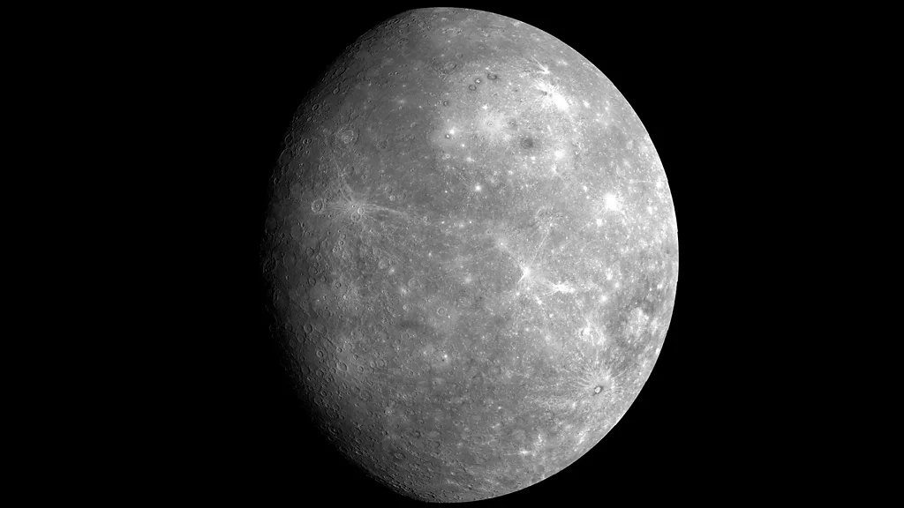
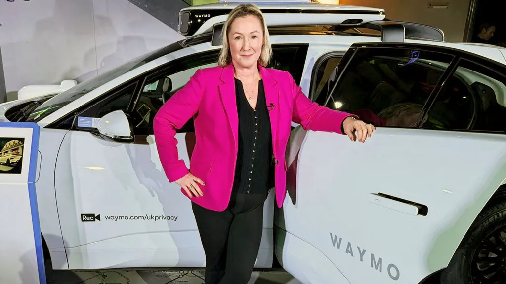
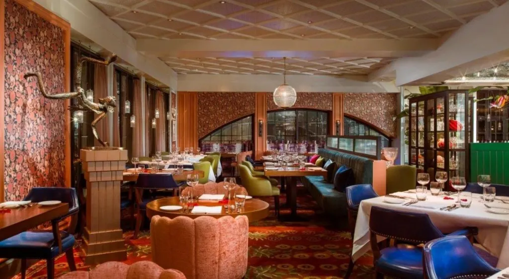

The ultra-cold temperatures needed for epic nuclear science
It's one of the most famous scientific installations in the world – and it's getting a cool upgrade.
Physicists use the Large Hadron Collider (LHC), buried in the ground on the border between France and Switzerland, to unravel secrets of the tiny particles that make up our Universe. The LHC works by smashing some of these particles into one another and observing what happens when they collide. By the 2030s, the LHC – built by the European Organization for Nuclear Research (Cern) – will produce many more of these collisions.
Why sports stars who head the ball are much more likely to die of Alzheimer's, Parkinson's and motor neurone disease
If you're a football player, there's nothing quite like the rush of leaping towards a ball hurtling towards you at great speed, heading it into the net, and scoring a goal for your team.
Yet evidence is mounting that repeatedly doing so can lead to brain damage that manifests decades later as Alzheimer's, Parkinson's and motor neurone disease. The dangers of contact sports have actually been known about for almost 100 years. In 1928, US pathologist Harrison Martland published a scientific article arguing that, "for some time, fight fans and promoters have recognised a peculiar condition occurring among prize fighters which, in ring parlance, they speak of as 'punch drunk'."

Mercury: The planet that shouldn't exist
At a cursory glance, Mercury might well be the Solar System's dullest planet.
Its barren surface has few notable features, there is no evidence of water in its past and the planet's wispy atmosphere is tenuous at best. The likelihood of life being found amidst its scotched craters is non-existent. Yet, look closer and Mercury is a fascinating, improbable world that is shrouded in mystery.

Driverless taxis set to launch in UK as soon as September
Waymo, the US driverless car firm, said it hopes to be operating a robotaxi service in London as soon as September this year.
The UK government has said it plans to change regulations in the second half of 2026 to enable driverless taxis to operate in the city but has not given a specific date. Waymo said a pilot service will launch in April and Local Transport Minister Lilian Greenwood said: "We're supporting Waymo and other operators through our passenger pilots, and pro-innovation regulations to make self-driving cars a reality on British roads." The firm, which is owned by Google-parent Alphabet, showed off a fleet of cars it brought to the UK at London's Transport Museum on Wednesday.
The 20 best places to travel in 2026
We love Dubrovnik – but so does everyone else.
Yet, many visitors to Croatia may not know that nearby Montenegro is also home to beautiful seaside settlements, plus new hiking trails that connect mountain communities. Across the water from always-trendy Buenos Aires, Montevideo offers similar world-class tango, steaks and architecture, and is one of South America's greenest cities. And while Rome may be eternal, Algeria's got the ancient ruins without the crowds.

An iconic Indian restaurant might have to shut after 99 years. Can the King save it?
Campaigners trying to prevent the closure of the UK's oldest surviving Indian restaurant are going to take a petition to Buckingham Palace in the next few weeks, calling on King Charles III to intervene.
Veeraswamy, a restaurant founded in 1926 and still in its original location on London's Regent Street, faces not having its lease renewed in a dispute with its landlord, the Crown Estate. King Charles has been an advocate for building links between communities and the restaurant's supporters are calling for his backing to protect it as "a living piece of shared cultural history". But the Crown Estate says the building needs a refurbishment that's not compatible with the restaurant remaining.